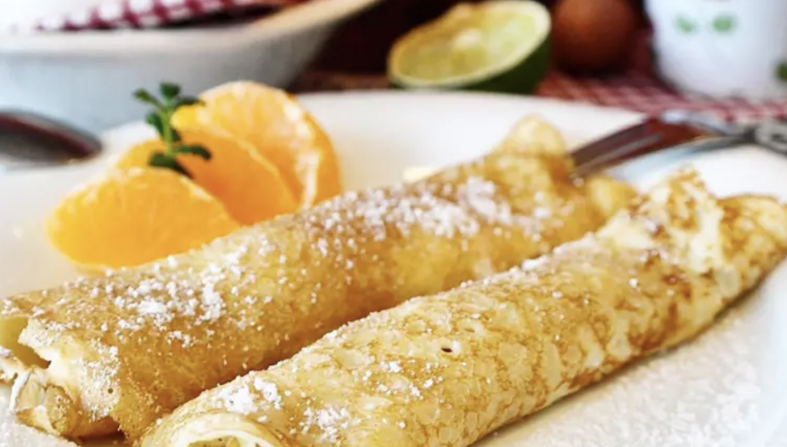

Background
Panqueca is a Portuguese way of making crepes. It's called panqueca because it's a pancake rolled up. Mainly my family makes it with just cheese, but other people put all kinds of things. I chose this because it is a weekly usual at my house and it tastes amazing. One tip is not to put too much cheese. Personally, I like these somewhat burnt so I like to have mine in the oven a bit more than what it says. I recommend the burnt ones more than the non-burnt.
Family
“Don't make panqueca like tia lia; she puts too much cheese.”
The Recipe
| Ingredient | Amount |
|---|---|
| Flour | 2 cups |
| Salt | 1 teaspoon |
| Milk | 2 cups |
| Egg | 2 |
| Oil | 1 tablespoon |
| Cheese stick | 1 for each panqueca |
| Instructions | |
| Step 1 | In a blender put milk, eggs, and oil. Blend and add some flour a bit at a time. |
| Step 2 | Blend until the liquid is uniform. |
| Step 3 | Heat a pan to a medium temperature and use a ladle to put some of the liquid covering the bottom of the pan. |
| Step 4 | Fry both sides until it turns golden brownish. |
| Step 5 | Put the pancake on a plate and add cheese to them. |
| Step 6 | Put the rolled pancakes on a tray and put it in a preheated oven (160°C) for 10-15 minutes. |
| Step 7 | Check every 5 minutes. Once ready, enjoy. |